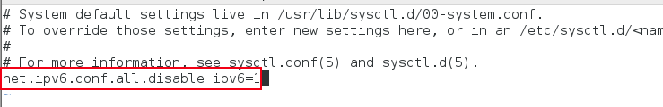

@(工作笔记)
CentOS-record
[TOC]

VMware下安装CentOS7无法上网解决办法
VMware虚拟机安装CentOS 7，使用NAT模式，CentOS不能连接到网络。
原因是Centos 7默认是不启用有线网卡的，需要手动开启。
操作步骤如下：
首先，打开终端。
cd /etc/sysconfig/network-scripts/
ls 查看一下ifcfg-ens后面对应的数字是什么，以ens32为例
vi ifcfg-ens32
编辑该文件
设置ONBOOT=yes
即开启自动启用网络连接
:wq 保存退出
service network restart 重启网络
这样CentOS就可以上网了！
安装wget
yum -y install wget
CentOS 7 使用NVM管理nodejs
1. 安装nvm
wget -qO- https://raw.githubusercontent.com/creationix/nvm/v0.34.0/install.sh | bash
会输出如下：
=> Downloading nvm as script to '/root/.nvm'
=> Appending nvm source string to /root/.bashrc
=> Appending bash_completion source string to /root/.bashrc
=> Close and reopen your terminal to start using nvm or run the following to use it now:
export NVM_DIR="$HOME/.nvm"
[ -s "$NVM_DIR/nvm.sh" ] && \. "$NVM_DIR/nvm.sh" # This loads nvm
[ -s "$NVM_DIR/bash_completion" ] && \. "$NVM_DIR/bash_completion" # This loads nvm bash_completion
提示信息可以看出，设置了环境变量， 需要刷新环境变量
source /root/.bashrc
验证环境变量是否生效
echo $NVM_DIR
输出了/root/.nvm说明已经OK 验证nvm安装是否成功
nvm --version
输出版本号说明nvm安装Ok
2. 使用nvm安装nodejs
- 安装nvm
wget -qO- https://raw.githubusercontent.com/creationix/nvm/v0.34.0/install.sh | bash
# 需重新打开一个终端
# 输入 nvm
# 看到版本信息就表示安装成功了
- nvm 安装node
nvm install v8.15.0
nvm use v8.15.0
nvm alias default v8.15.0
node -v
- 安装pm2
npm --registry=https://registry.npm.taobao.org install -g pm2
- 制作cnpm
vim ~/.bashrc
alias cnpm="npm --registry=https://registry.npm.taobao.org \
--cache=$HOME/.npm/.cache/cnpm \
--disturl=https://npm.taobao.org/dist \
--userconfig=$HOME/.cnpmrc"
修改CentOS默认yum源为mirrors.aliyun.com
1、首先备份系统自带yum源配置文件/etc/yum.repos.d/CentOS-Base.repo
[root@localhost ~]# mv /etc/yum.repos.d/CentOS-Base.repo /etc/yum.repos.d/CentOS-Base.repo.backup
2、下载ailiyun的yum源配置文件到/etc/yum.repos.d/ CentOS7
[root@localhost ~]# wget -O /etc/yum.repos.d/CentOS-Base.repo http://mirrors.aliyun.com/repo/Centos-7.repo
CentOS6
[root@localhost ~]# wget -O /etc/yum.repos.d/CentOS-Base.repo http://mirrors.aliyun.com/repo/Centos-6.repo
CentOS5
[root@localhost ~]# wget -O /etc/yum.repos.d/CentOS-Base.repo http://mirrors.aliyun.com/repo/Centos-5.repo
3、运行yum makecache生成缓存
[root@localhost ~]# yum makecache
4、这时候再更新系统就会看到以下mirrors.aliyun.com信息
[root@localhost ~]# yum -y update
已加载插件：fastestmirror, refresh-packagekit, security
设置更新进程Loading mirror speeds from cached hostfile
* base: mirrors.aliyun.com
* extras: mirrors.aliyun.com
* updates: mirrors.aliyun.com
centos7如何关闭ipv6
centos7上开启ipv6往往有些不太方便，有时走ipv4协议有时走ipv6协议，出现问题了将会很难排查。
而且还是内网机器，地址往往是够用的，没必要使用到ipv6。所以有时我们需要关闭机器的ipv6
- 使用ifconfig命令查看网卡信息，如果出现inet6 fe80::20c:29ff:fed0:3514，说明机器开启了ipv6

- 编辑/etc/sysctl.conf配置，增加net.ipv6.conf.all.disable_ipv6=1

- 编辑/etc/sysconfig/network配置，增加 NETWORKING_IPV6=no，保存并退出

- 编辑/etc/sysconfig/network-scripts/ifcfg-eno16777736，确保IPV6INIT=no，ifcfg-eno16777736是根据自己机器的 实际网卡信息来看，不是固定的

- 关闭防火墙的开机自启动
systemctl disable ip6tables.service # 我这运行不了 什么鬼...
- 执行sysctl -p或者reboot重启命令

- 再次使用ifconfig进行验证，只剩下ipv4，ipv6消失了，关闭成功

centos7 安装使用proxychains4
https://jingyan.baidu.com/article/148a1921f5c5fe4d71c3b105.html
简单记录下安装proxychains4的过程
安装git执行yum install git
安装make环境yum -y install gcc automake autoconf libtool make
下载proxychains4执行git clone https://github.com/rofl0r/proxychains-ng.git
生产配置文件
cd proxychains-ng 然后
./configure
编译安装make && sudo make install
提取配置文件cp ./src/proxychains.conf /etc/proxychains.conf
请理安装包cd .. && rm -rf proxychains-ng
编辑配置文件vim /etc/proxychains.conf

最后测试，测试成功

CentOS 7安装配置Shadowsocks客户端
https://lamjack.github.io/2018/06/08/centos7-setup-shadownsocks-and-proxychains/
安装epel扩展源和pip
sudo yum -y install epel-release
sudo yum -y install python-pip
安装Shadowsocks客户端
pip install shadowsocks
配置Shadowsocks客户端
vi /etc/shadowsocks.json
添加如下配置：
{
"server":"c15s3.jamjams.net",
"server_port":20508,
"local_address":"127.0.0.1",
"local_port":1080,
"password":"xxxxxx",
"timeout":300,
"method":"aes-256-cfb",
"workers":1
}
参数说明：
server：Shadowsocks服务器地址
server_port：Shadowsocks服务器端口
local_address：本地IP
local_port：本地端口
password：Shadowsocks连接密码
timeout：等待超时时间
method：加密方式
workers:工作线程数
fast_open：true或false。开启fast_open以降低延迟，但要求Linux内核在3.7+。
开启方法:
echo 3 > /proc/sys/net/ipv4/tcp_fastopen
配置自启动
① 新建启动脚本文件/etc/systemd/system/shadowsocks.service，内容如下：
[Unit]
Description=Shadowsocks
[Service]
TimeoutStartSec=0
ExecStart=/usr/bin/sslocal -c /etc/shadowsocks/shadowsocks.json
[Install]
WantedBy=multi-user.target
② 启动Shadowsocks客户端
systemctl enable shadowsocks.service
systemctl start shadowsocks.service
systemctl status shadowsocks.service
关闭方法简单粗暴...
pkill sslocal
验证Shadowsocks客户端是否正常运行：
curl --socks5 127.0.0.1:1080 http://httpbin.org/ip
若Shadowsock客户端已正常运行，则结果如下：
{
"origin": "10.10.10.10" #你的Shadowsock服务器IP
}
centos7中提升用户权限
提升用户权限我看网上资源有两种方法，一种是修改/etc/sudoers/文件将新增的用户权限提升为和root一样的权限，这种方法不知道怎么回事我没用应用成功，这里我介绍第二种方法，第二种方法是更改/etc/passwd/文件，修改方法如下：

将用户权限改为0就可以获得root权限
centos7 防火墙关闭
//临时关闭
systemctl stop firewalld
//禁止开机启动
systemctl disable firewalld
Centos系统如何设置固定IP
https://jingyan.baidu.com/article/6c67b1d65127692787bb1ef3.html
Centos7 安装与卸载
yum localinstall xxx.rpm
rpm -qpi google-chrome-stable_current_x86_64.rpm
yum remove google-chrome-stable
cloudera-manager-agent-5.1.0-1.cm510.p0.75.el6.x86_64.rpm is a filename. RPM files contain packages and you can query the details from the file by using rpm -qpi cloudera-manager-agent-5.1.0-1.cm510.p0.75.el6.x86_64.rpm and from that it tells you the package name and it's that that you need to tell yum to remove. In this case yum remove cloudera-manager-agent looks hopeful
centos7 安装python3和pip3
centos7默认是安装的python2.7以及对于的pip
如果要使用python3并且保留python2请看以下步骤
sudo yum -y install epel-release
sudo yum install python34
下载好了python34，输入python3即可使用
安装pip3
sudo yum install python34-pip
输入pip3即可使用
CentOS 7 安装 JAVA环境（JDK 1.8）
https://www.cnblogs.com/stulzq/p/9286878.html
Linux系统查看系统是32位还是64位方法总结
https://www.cnblogs.com/kerrycode/p/3785768.html
在CentOS英文版中安装中文支持
https://ywnz.com/linuxjc/2382.html
Ubuntu修改终端下的语言（中文或英文）
https://blog.csdn.net/BobYuan888/article/details/88662779